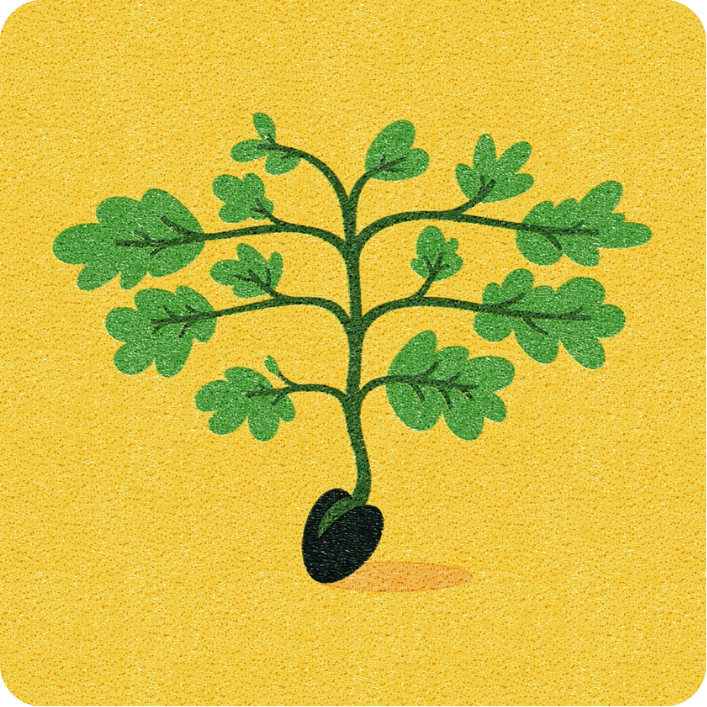

← Voltar para o InícioMódulo 3: A Semente e a Aliança
Sessões 11-15
Explore o desenvolvimento da promessa de Deus a Abraão e o estabelecimento da aliança.

← Voltar para o InícioExplore o desenvolvimento da promessa de Deus a Abraão e o estabelecimento da aliança.